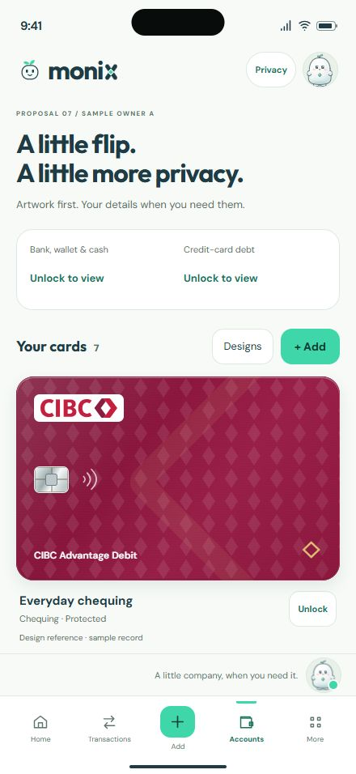
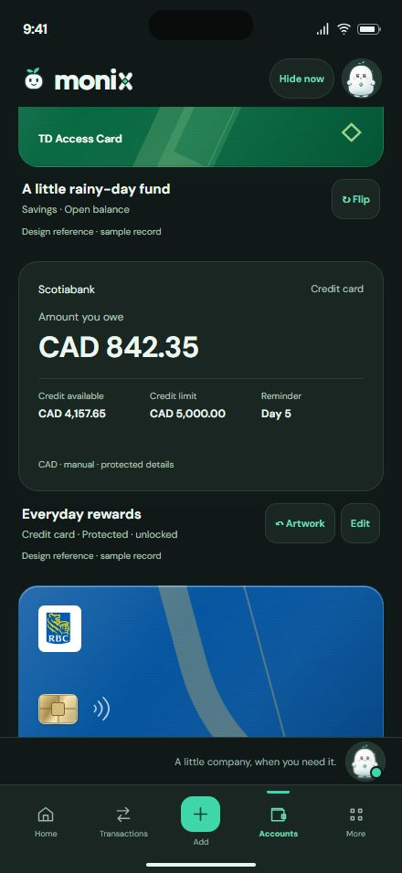
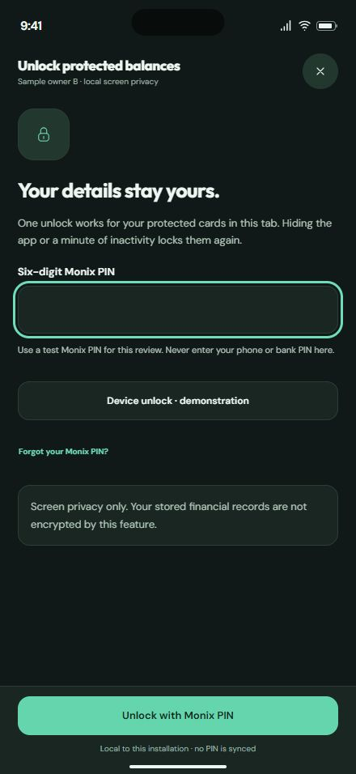
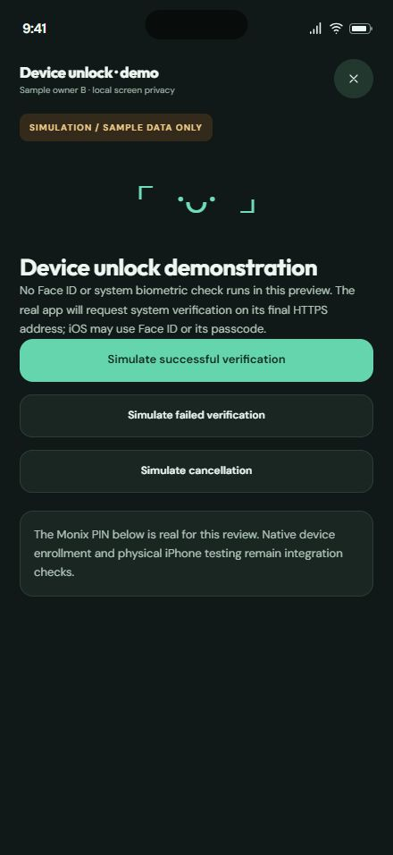

Optional balance privacy · phone-first review · sample records only
iPhone 16 Pro Max440 × 956 CSS px

Amounts are absent from the locked page, including related totals.

Debt, available credit, limit, and reminder appear only after unlocking.

One six-digit Monix PIN for selected cards on this installation.

Explicit simulation. Native Face ID requires final HTTPS integration.